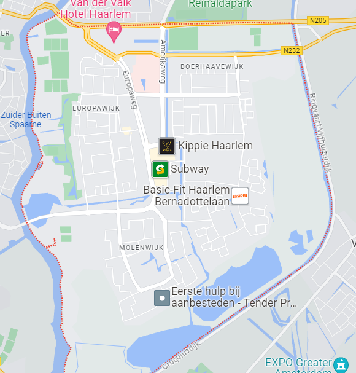

- 
-
Route naar Schalkwijk,
Je kunt op verschillende manieren naar Schalkwijk in Haarlem komen vanuit elk punt in Nederland, afhankelijk van je locatie en voorkeur kun je met de auto, fiets of openbaar-vervoer gaan.
Bereken u route
Vaak onderschat je hoe leuk Haarlem Schalkwijk kan zijn voor de gehele familie. Er zijn zo veel leuke activiteiten voor kinderen en jongeren te vinden die zij met of zonder ouders kunnen gaan doen. Van zwemmen en kanoën tot een super leuk winkelcentrum.
Je kunt op verschillende manieren naar Schalkwijk in Haarlem komen vanuit elk punt in Nederland, afhankelijk van je locatie en voorkeur kun je met de auto, fiets of openbaar-vervoer gaan.
Bereken u routeSchalkwijk, een wijk in de stad Haarlem, kent een intrigerende geschiedenis die teruggaat tot de middeleeuwen. Oorspronkelijk een landelijke nederzetting, groeide Schalkwijk uit tot een klein dorp met boerderijen en een eigen karakter. Tijdens de Tachtigjarige Oorlog speelden verdedigingswerken in de buurt van Schalkwijk een rol in de bescherming van Haarlem. Later werd Schalkwijk opgenomen in de stad Haarlem, vandaag de dag is Schalkwijk een levendige en gevarieerde wijk.
Bekijk meer